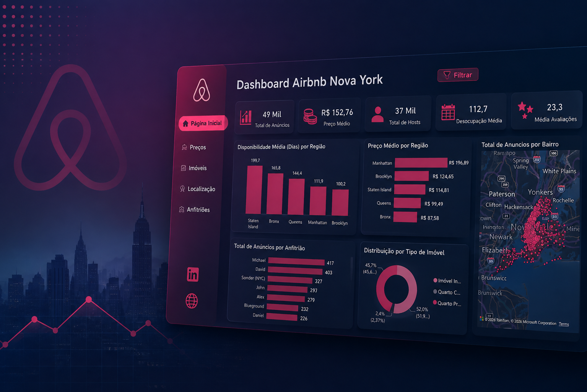
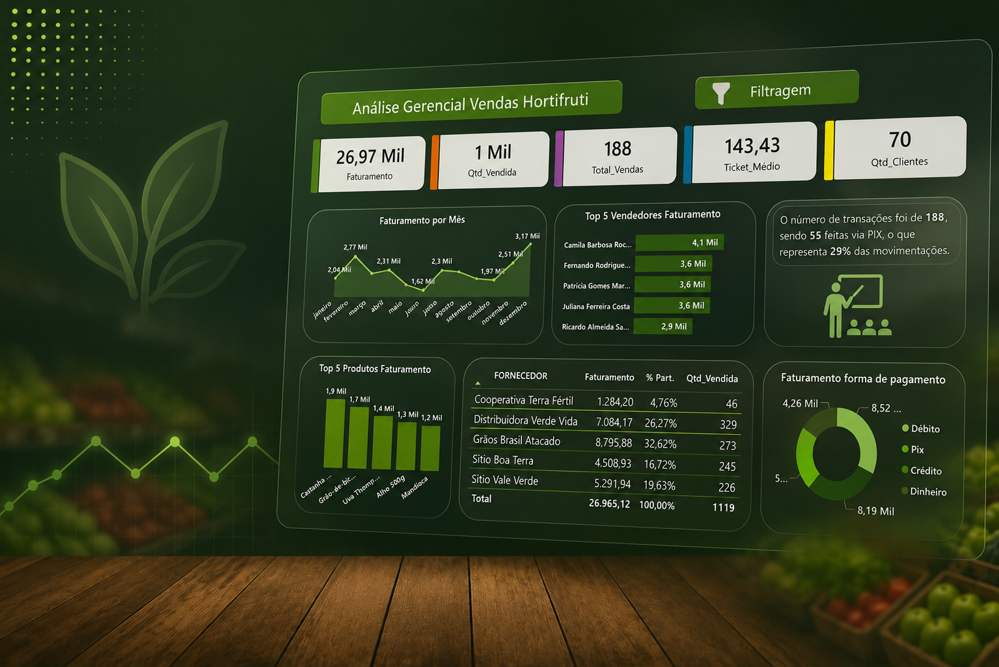
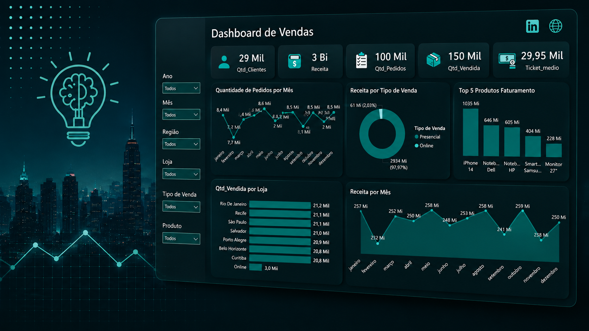
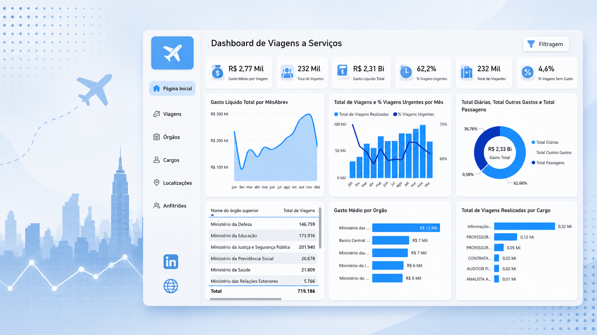
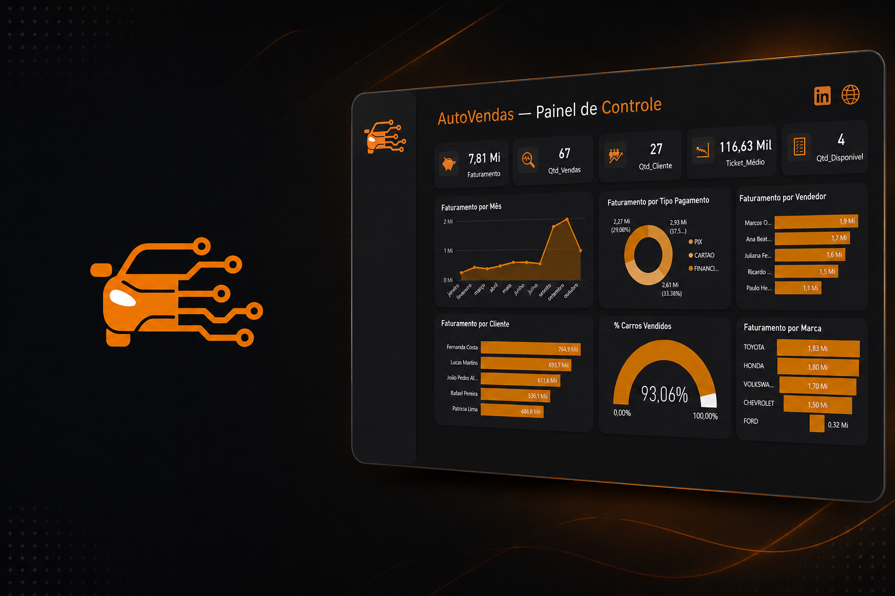
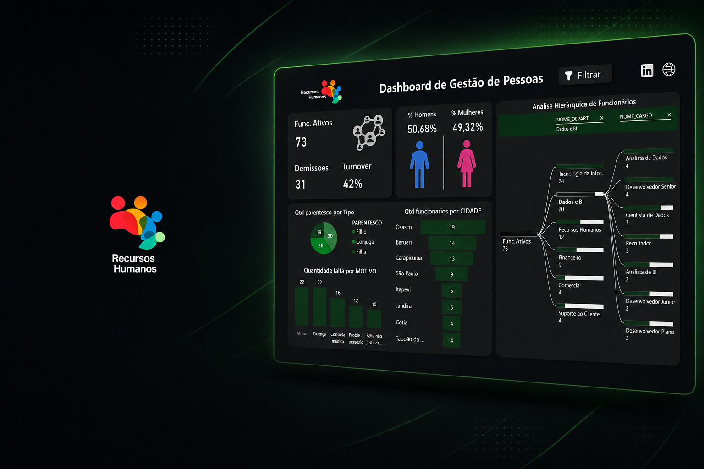

Análise de Mobilidade Urbana
Análise de 150 mil reservas para identificar padrões de cancelamento e oportunidades de melhoria operacional.
Olá, eu sou
Transformando dados em informações para apoiar decisões e gerar soluções.
Sou estudante de Análise e Desenvolvimento de Sistemas, com interesse em Dados, Business Intelligence e tecnologia. Busco desenvolver soluções orientadas por dados, transformando informações em análises que contribuam para a compreensão de problemas e a tomada de decisões.
Tenho grande interesse em análise e resolução de problemas, buscando constantemente desenvolver meus conhecimentos e aplicá-los na construção de projetos e soluções práticas.
Busco desenvolver minha carreira na área de tecnologia, com foco em Dados e Business Intelligence, aplicando meus conhecimentos para transformar dados em informações relevantes para a tomada de decisões.
02/2024 – 06/2027 | Cursando — 4º Semestre
Ferramentas e tecnologias que utilizo em projetos de análise, visualização e engenharia de dados.
 Power BI
Power BI
 Excel
Excel
Projetos desenvolvidos para transformar conhecimento em soluções e resultados.
Análise de 150 mil reservas para identificar padrões de cancelamento e oportunidades de melhoria operacional.

↗Engenharia de dados com Dashboard Interativo (BI)

↗Desenvolvimento de banco de dados com dashboard analítico.

↗Análise de faturamento e desempenho comercial

↗Engenharia de dados com Dashboard de Custos e Viagens (BI)

↗Tratamento e análise de dados para geração de informações.

↗Banco de dados e dashboard para gestão de RH.